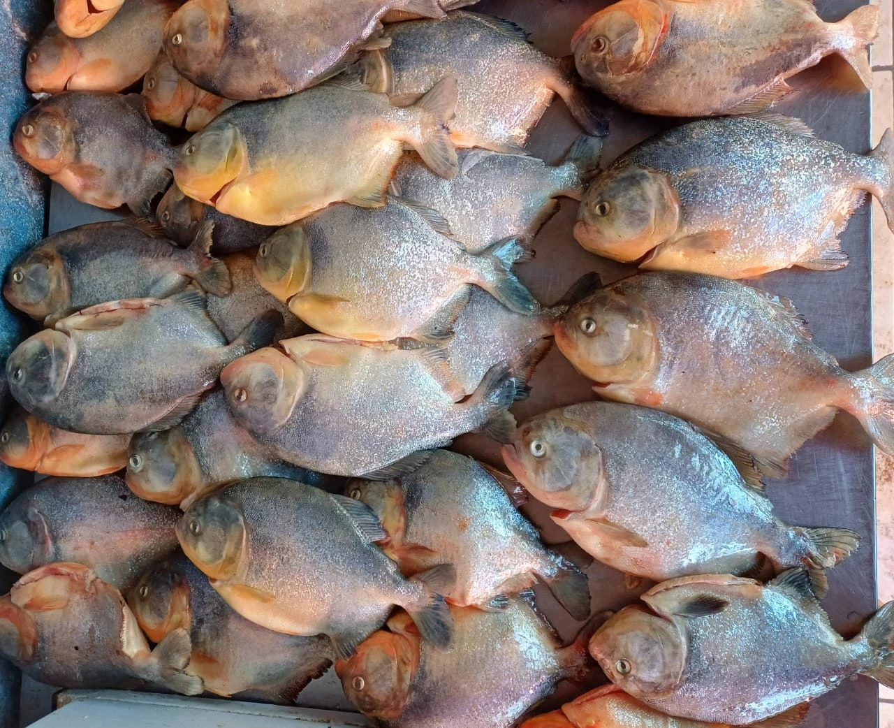

Piranha Fresca
Pygocentrus nattereri
Produto vendido tradicionalmente inteiro.
Consultar Preço e EncomendarRetire na loja: R. Bom Jardim, 379 — Centro, Cáceres.
Piranha: O Peixe Mais Famoso do Pantanal nas Suas Mãos
A Piranha (Pygocentrus nattereri), também conhecida como Piranha-vermelha ou Piranha-caju, é um dos peixes mais icônicos e temidos do imaginário popular — mas na mesa pantaneira, é uma verdadeira iguaria. Habitante natural das águas barrentas e dos rios de planície do Pantanal mato-grossense, a Piranha é encontrada em abundância no Rio Paraguai e em seus tributários, especialmente nas lagoas marginais que se formam durante a cheia. Com corpo comprimido, dentição afiada e coloração que varia do cinza-prateado no dorso ao vermelho-alaranjado na barriga, a Piranha adulta pesa entre 500g e 1,5 quilo — tamanho ideal para preparar inteira em caldos, fritas ou assadas.
A Piranha na Culinária Pantaneira: Muito Além da Fama
Apesar da reputação feroz, a carne da Piranha é delicada, firme e de sabor marcante — mais intenso que o de peixes como o Piauçu, mas sem o excesso de gordura do Pacu. A tradição culinária pantaneira consagrou o caldo de Piranha como o prato mais famoso da região, e não é à toa: o caldo resultante da cocção das Piranhas inteiras com tomate, cebola, pimentão, coentro e pimenta-de-cheiro é um líquido espesso, dourado e extremamente saboroso, com uma complexidade que os peixes de piscicultura jamais conseguem reproduzir. Pescadores e ribeirinhos do Pantanal afirmam que o "caldo de Piranha dá força" — uma referência bem-humorada ao poder nutritivo do prato, que é rico em proteínas, minerais e colágeno naturalmente extraído dos ossos durante o cozimento.
Como Preparar a Piranha: Receitas e Dicas Regionais
O preparo mais tradicional é o caldo de Piranha pantaneiro: ferva água em panela funda e adicione as Piranhas inteiras limpas com tomate, cebola, pimentão verde e vermelho, sal, coentro e pimenta-de-cheiro. Cozinhe em fogo médio por 20 a 25 minutos até o caldo ficar dourado e encorpado. Coe o caldo e sirva quente, acompanhado de arroz branco e farinha de mandioca. Para quem prefere a carne, frite as Piranhas inteiras em óleo bem quente até a pele ficar crocante e dourada — o interior fica macio e suculento, surpreendendo até os paladares mais exigentes. Atenção especial ao manuseio: mesmo após a captura, as mandíbulas da Piranha permanecem extremamente afiadas, portanto a limpeza deve ser feita com cautela.
Piranha Fresca em Cáceres — Capturada no Rio Paraguai
Na Peixaria Rio Paraguai, a Piranha é capturada por pescadores parceiros nas águas do Rio Paraguai e entregue ao balcão fresquíssima, limpa e pronta para o preparo. Por ser um peixe de tamanho compacto, é normalmente comercializada em lotes de duas a cinco unidades — quantidade ideal para um caldo para quatro pessoas. A disponibilidade é variável conforme a época do ano e as condições do rio. Consulte a disponibilidade pelo WhatsApp antes de fazer seu pedido e garanta a Piranha mais fresca do dia para a sua mesa.